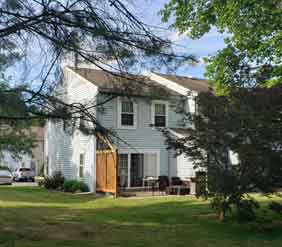

Я не хочу писать об этом, я не хочу опять проходить через острые гвозди омерзения, молот несправедливости, пилу злобы и петлю разочарования. Но у меня есть соседи. Прямо перед нашим домом стоит милый голубой дом, и в нём живут люди. Они купили этот дом лет 13 тому назад. Стареющая пара с сыном и его женой, жена была тогда беременной первым ребёнком. Сейчас деток двое: девочке лет 11 и мальчику года 4. Приятные люди, улыбаются, здороваются, готовят шашлыки, пьют пиво, вечерами отдыхают на крыльце дома, а дети бегают, играют, смеются.Между их домом и моим - одно небольшое деревце. Летом листья на нём ещё немного закрывают наши дома друг от друга, но всё остальное время я вижу их дом: утром, когда впускаю свет в свою комнату, днём, когда хочу любоваться природой за окном, вечером, когда зажигаются тёплые огоньки семейных вечеров.
Но я не хочу видеть этот дом, этих людей, этих здоровых и счастливых детей. Потому что каждый раз, каждый день, видя их и их дом, я вижу один день... Этот день был тогда, когда у соседей родился первый ребёнок, их первое сокровище, маленький комочек жизни, ничего не знающий о том месте, куда он пришёл и что с собой принёс. Моей дочке тогда было 7, нежный возраст. Мы живём вдали от городов, и природа вокруг нас удивляет своей доступностью. Мы часто видим оленей, лис, кормим белок и птиц, наблюдаем за сурками, гусями, жабами и бурундуками, а ещё к нам приходил скунс, вернее, самка скунса. Ей не хватало еды на кормление детёнышей, и она шла за помощью к тем, кого обычно боялась. У неё не было выхода. Мы подкармливали её. Красивое животное, чёрно-белое, с блестящими бусинами чёрных глаз. Она ела, мы радовались.
Но у нас были соседи, а у них был малыш и страх. Этот день был ярким, солнечным, летним. В нашу дверь раздался уверенный громкий стук, муж открыл дверь, ему что-то говорили мужские голоса, а я в окне увидела мелькание полицейской формы. Муж осторожно подозвал меня и попросил увести нашу маленькую дочку на второй этаж и закрыть ей уши. Я не понимала, что происходит, но потом я взглянула в окно. И я увидела милый голубой дом, на фоне которого стояло всё семейство соседей - бабушка, дедушка, отец с мамой и новорождённый малыш на руках. Они смотрели в сторону нашего дворика. Я последовала за их взглядом.
Почти у самого нашего порога стояло двое больших и сильных мужчин в тёмной полицейской форме, у них в руках был пистолет. А совсем на нашем пороге стояло маленькое пушистое существо с чёрными блестящими глазами. Оно пришло к людям за помощью в своём нелёгком деле быть мамой. Дуло пистолета было направлено на неё. Я еле успела закрыть уши своей дочке. Выстрел. Люди разошлись. Акт «спасения человечества» был совершён. Мы сказали дочке, что полицейские промахнулись и наш скунс убежал.Я пишу этот рассказ и смотрю в окно, где стоит голубой дом. Скоро там зажгутся вечерние огни, и семья соберётся вместе. Взрослые будут смотреть новости, беседовать, а их дети - смеяться, играть, радоваться, их человеческие дети. Мы действительно в ответе за тех, кого приручили... в нашем человеческом мире.
I don't want to write about this; I don't want to go through the sharp nails of disgust, the hammer of injustice, the saw of anger, and the noose of disappointment again. But I have neighbors. Right in front of our house stands a lovely blue house, and people live in it. They bought this house about 13 years ago. An aging couple with their son and his wife; the wife was pregnant with their first child at the time. Now they have two children: an 11-year-old girl and a 4-year-old boy. They are pleasant people, smiling, saying hello, cooking shashlik, drinking beer, relaxing on the porch in the evenings while the children run, play, and laugh. Between their house and mine is one small tree. In the summer, its leaves still slightly obscure our houses from each other, but the rest of the time I see their house: in the morning, when I let the light into my room, during the day, when I want to admire nature outside the window, and in the evening, when the warm lights of family evenings are lit.
But I don't want to see this house, these people, these healthy and happy children. Because every time, every day, when I see them and their home, I see one day... That day was when the neighbors' first child was born, their first treasure, a tiny bundle of life, unaware of the place they had come to and what they had brought with them. My daughter was seven then, a tender age. We live far from cities, and the nature around us amazes us with its accessibility. We often see deer and foxes, feed squirrels and birds, watch marmots, geese, toads, and chipmunks, and a skunk, or rather a female skunk, came to visit us. She didn't have enough food to feed her cubs, and she turned for help to those she usually feared. She had no choice. We fed her. A beautiful animal, black and white, with glittering, beady black eyes. She ate, and we rejoiced.
But we had neighbors, and they had a baby and a fear. It was a bright, sunny summer day. There was a loud, confident knock on our door. My husband opened it, and male voices were saying something to him, and I saw a flash of a police uniform in the window. My husband carefully called me over and asked me to take our little daughter up to the second floor and cover her ears. I didn't understand what was happening, but then I glanced out the window. And I saw a lovely blue house, against which stood the entire neighboring family—grandmother, grandfather, father and mother, and a newborn baby in their arms. They were looking toward our courtyard. I followed their gaze.
Almost at our very threshold stood two large, strong men in dark police uniforms, holding a pistol. And right at our door stood a small, furry creature with black, glittering eyes. It had come to people for help in its difficult task of being a mother. The barrel of the pistol was pointed at it. I barely managed to cover my daughter's ears. A shot rang out. The people dispersed. The act of "saving humanity" was complete. We told our daughter that the police missed and our skunk escaped. I'm writing this story and looking out the window at the blue house. Soon the evening lights will come on there, and the family will gather. The adults will watch the news, chat, and their children will laugh, play, rejoice—their human children. We truly are responsible for those we have tamed... in our human world.